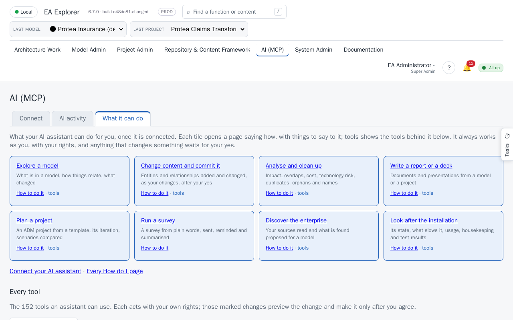

Analyse with AI
For: Practising architects
Impact, rationalisation, cost, technology risk and single points of failure, explained.

#/mcp/toolsWhy do this
Analysis is where a repository pays back: what depends on this, where do we duplicate, what is at risk. Your AI assistant can run those questions across the model in plain language and explain what it found, with the entities to check. See AI in EA Explorer.
Using AI in EA Explorer is always your assistant working with your rights: it reads and drafts, you review and commit. Used well, it takes the slow parts of architecture work (searching, cross-checking, first drafts) so you spend your time on judgement.
In TOGAF terms: Outside the standard's method, but in service of it: AI speeds up gathering content (phases B to D), analysis (E) and reporting to stakeholders, with people reviewing every change. See EA Explorer and the TOGAF Standard.
The goal: Your AI assistant does the analysis you would do by hand: impact, gaps, overlaps.
Before you start Connect your AI assistant.
Things to ask
- What is affected if we retire the Policy Admin system?
- Which applications overlap, and what would you suggest for each?
- What is the total cost by capability?
- What runs on technology near its end of life, and which capabilities does that put at risk?
- Where are the single points of failure?
- Why did the quality score drop in September?